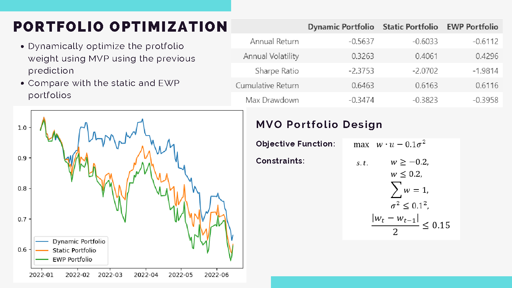
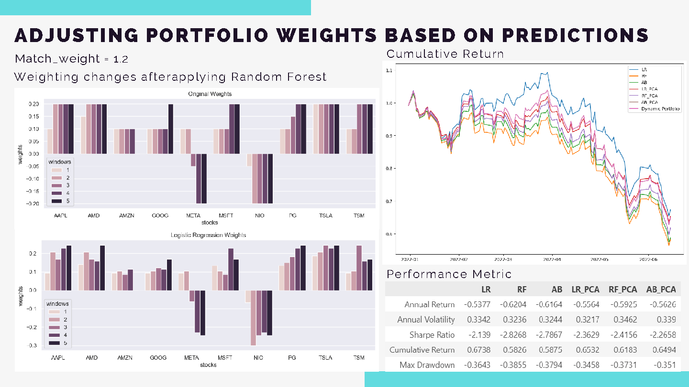
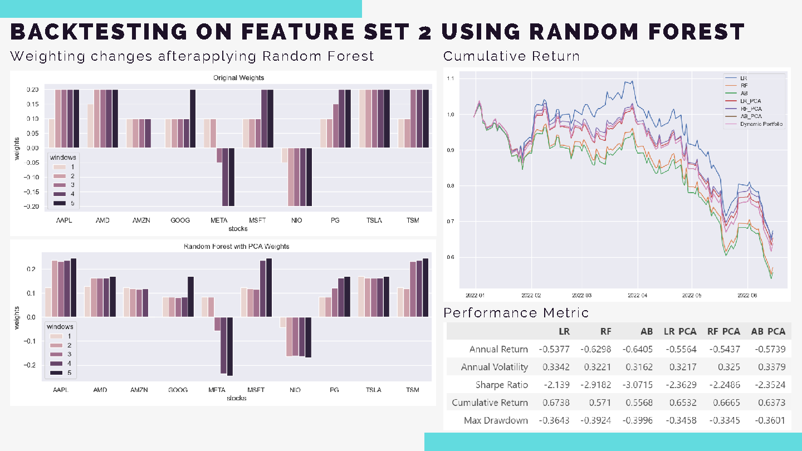
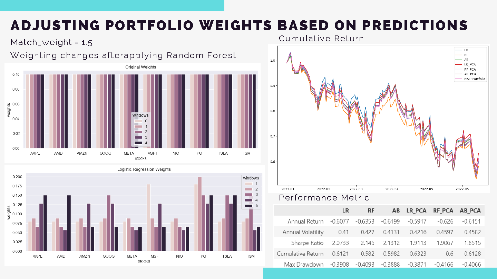

Stock Prediction with Sentiment Analysis
Machine Learning & NLP for Enhanced Portfolio Performance • May 2024
Project Overview
This project integrates sentiment analysis with stock market data for predictive modeling, aiming to enhance portfolio performance through machine learning models. The system tests various models to predict stock price movements and adjusts portfolios based on these predictions.
Introduction and Objectives
The project combines sentiment analysis with stock market data to predict price movements with the following objectives:
- Sentiment Analysis as a Feature - Incorporate sentiment analysis to predict price movements
- Machine Learning Models - Test different models to forecast overall stock movement during the next rebalance window
- Portfolio Adjustment - Adjust portfolio weights based on predictions, focusing on True Positive and True Negative outcomes
Sentiment analysis is used as a market indicator to provide quantitative measures of market sentiment, enhancing profit opportunities particularly in short-term trading scenarios.
Methodology
The methodology consists of several key steps:
- Feature Processing/Selection - Extract relevant features from stock data and sentiment scores
- Model Training - Train machine learning models including Logistic Regression, Random Forest, and AdaBoost
- Portfolio Adjustment - Adjust portfolio weights based on model predictions
- Backtesting - Evaluate performance over multiple rebalance windows
Sentiment Analysis on Stock-Related Tweets
- Data Filtering - Stocks with fewer than 500 tweets are filtered out
- Sentiment Calculation - Sentiment scores calculated using SentimentIntensityAnalyzer from nltk.sentiment.vader
- Feature Engineering - Two feature sets incorporating stock data, sentiment scores, technical indicators, and momentum measures
Model Features Selection
Portfolio Design
A Mean-Variance Optimization (MVO) portfolio is designed as the benchmark portfolio:
Model Selection and Results
Portfolio Configuration
- Rebalance period: 10 days
- Lookback period: 50 days (for MVO portfolio)
- Backtesting: Conducted over 23 windows (230 days)
Using MVO as Benchmark Portfolio
Selected Model: Logistic Regression (LR)
Using PCA for Dimensionality Reduction
Selected Model: Random Forest (RF)
Using Equal Weights Portfolio (EWP) as Benchmark
Technology Stack
Insights and Results
- Performance: Certain models can slightly improve annual return and Sharpe Ratio while maintaining similar variance
- Prediction Accuracy: While Logistic Regression and Random Forest may not have the highest prediction accuracy, they demonstrate strong performance metrics, suggesting other factors beyond accuracy influence results
Limitations and Potential Improvements
- Sentiment Data: The Kaggle dataset may be limited. Using Twitter's API for more targeted data retrieval is recommended
- Machine Learning Models: Current models have limitations in prediction accuracy. Exploring advanced models such as GANs may improve results
- Weight Adjustment: More robust formulas to favor matching cases and combining price prediction to optimize MVO portfolios could be beneficial
- Rebalance Period: A shorter rebalance period may be more effective, as market sentiment can influence prices over brief periods. Day-trading or 3-day trading strategies are recommended
Repository
Find the source code and detailed analysis:
View Jupyter NotebookLicense
This project is open-source and available under the MIT License.